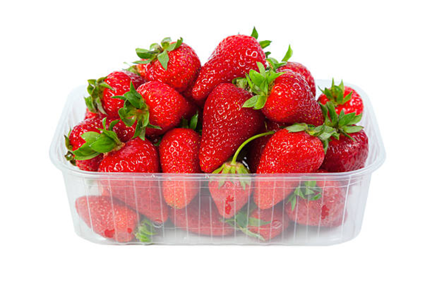

The garden strawberry was first bred in Britain, France in the 1750s via a cross of Fragaria virginiana from eastern North America and Fragaria chiloensis.
Eye CareBoosts ImmunityPrevents Cancer
Strawberries contain more vitamin C than oranges do!
Pelargonidin-3-glucoside is the major anthocyanin in strawberries and cyanidin-3-glucoside is found in smaller proportions.
Health Benefits of Strawberry
Boosts immune system
Reduces risk of eye related ailments
Helps maintain normal blood pressure
Lowers risk of arthritis, gout and cancer
Helps regulate proper functioning of nervous system
Prevents heart diseases and reduces cholesterol
Strawberries are rich in potassium and magnesium content, both of which are effective in lowering high blood pressure caused by sodium and various other risk factors.

Fruit tastes better When you take it with your family